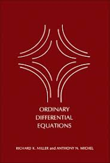
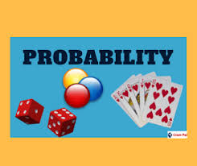

Assignment 1
Metrices, Transform Techniques
Due Date:10 JULY 2021
Two mark and Three marks questions (SA)1.Radha , fauzia, simran are the student of 12thclass Radha has 15 note book and 6 pens , Fauzia has 10 books 2 pens and Simran has 13 books and 5 pens express this in to matrixforms.Assignment 2
Ordinary differential equation
Due Date: 12 JULY 2021
A 1500 gallon tank initially contains 600 gallons of water with 5 lbs of salt dissolved in it. Water enters the tank at a rate of 9 gal/hr and the water entering the tank has a salt concentration of 15(1+cos(t)) lbs/gal. If a well mixed solution leaves the tank at a rate of 6 gal/hr, how much salt is in the tank when it overflows?
Assignment 3
Probablity
Due Date: 15 JULY 2021
In a class in which all students practice at least one sport, 60% of students play soccer or basketball and 10% practice both sports. If there is also 60% that do not play soccer, calculate the probability that a student chosen at random from the class: